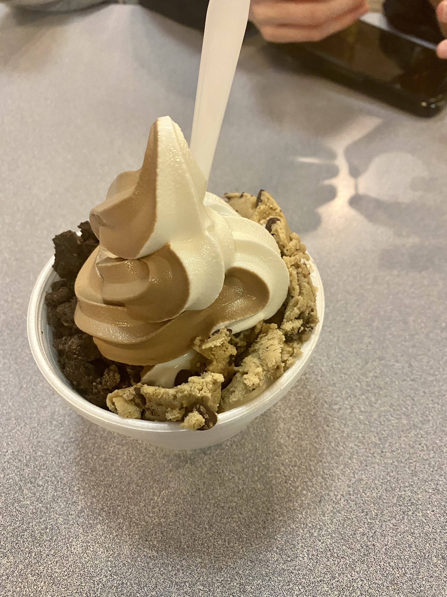

Ann Arbor Restaurants
Are you a foodie? Do you love Ann Arbor? Looks like you've come to the right place.
Here, we've highlighted some of our favorite restaurants from all over AA. Check out the following pictures!

aMa Bistro
215 S South St

Bigalora - 3050 Washtenaw Ave

Frita Batidos - 117 W Washington St

Joe's Pizza - 1107 S University Ave

Palio - 347 S Main St

Stray Hen Cafe - 403 E Washington St

TAQ - 106 E Liberty St

Slurping Turtle - 608 E Liberty St

Zingerman's Delicatessen - 422 Detroit St

Moon Cafe - 812 S State St